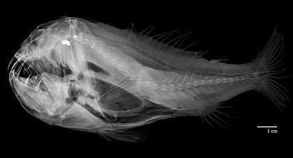
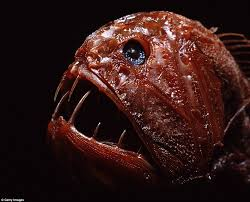

- Là loài cá sống đáy, săn mồi theo kiểu phục kích, sống sâu tới 50 feet hoặc hơn và ít được con người nhìn thấy.
- Chúng có khả năng phóng điện, chừng 50 volt, không đủ để hại con người, nhưng dù sao cũng bị choáng. Nếu bạn nhìn gần vào bức ảnh trên cùng, bạn có thể thấy cơ quan phóng điện phồng lên đằng sau mắt.